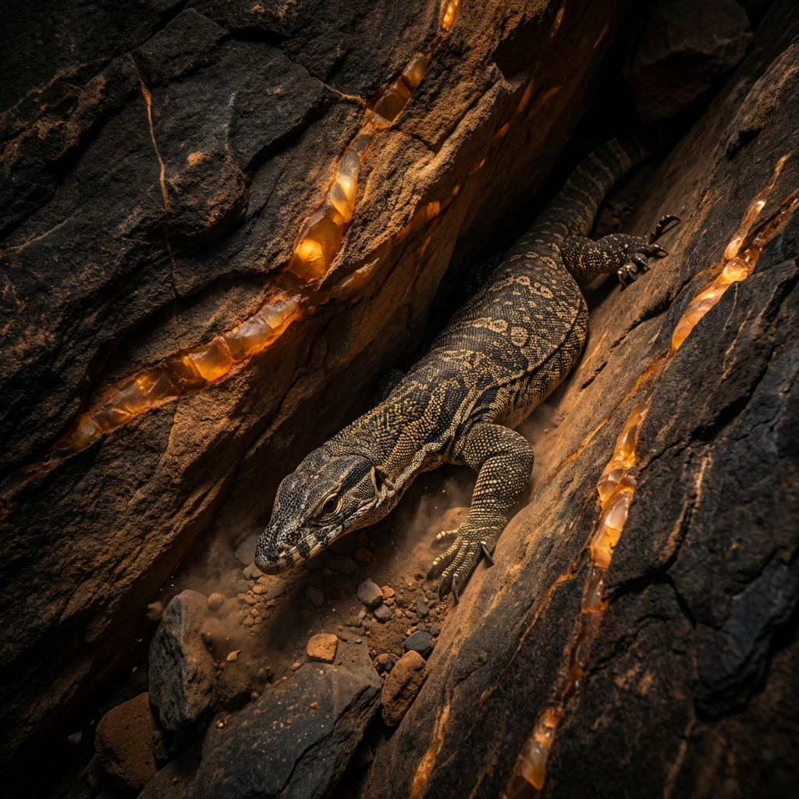
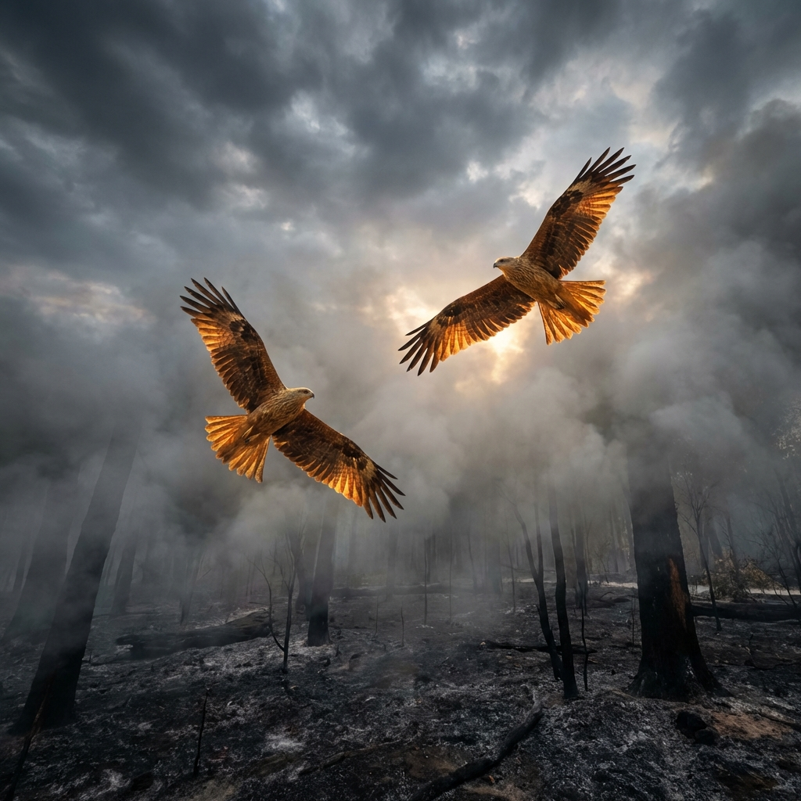

The Survivors of the Scorched Earth
Elemental
Magic
How Australia’s unique wildlife uses instinct and adaptation to outsmart the most powerful force of nature: The Bushfire.
1) The Science of Survival
Bushfires are a fundamental, albeit terrifying, part of the Australian landscape. They move with incredible speed, reaching temperatures that can melt steel and filling the atmosphere with suffocating smoke. Yet, for the animals that call the bush home, fire is not a new enemy. Over millions of years, creatures from kangaroos to tiny echidnas have developed a sophisticated toolkit of "survival magic"—behaviours and biological features that allow them to endure where others cannot.
Success in a fire zone isn't about one single trick; it's a dynamic calculation of timing and location. Animals must decide in a split second whether to flee the approaching front, seek shelter in the deep earth, or wait for the precise moment when the heat passes. This "Elemental Magic" is what keeps the Australian outback breathing, even when the world seems to be turning to ash.
The Survival Toolkit
Fleeing: Moving ahead of the front.
Sheltering: Using natural shields like soil and stone.
Timing: Sensing smoke and heat changes hours before arrival.
Kangaroos: The Tactical Runners

Kangaroos are the masters of the "Early Exit." Using their powerful hind legs and incredible endurance, they can sense the subtle chemical shifts in the air—the scent of distant smoke or the unnatural warmth of a northerly wind—and begin their evacuation long before the first flame is visible. Their survival strategy is built on kinetic energy; they move fast and they move early.
When the fire is near, kangaroos seek out "Tactical Sanctuaries"—large, open spaces like rocky outcrops, cleared paddocks, or waterholes. By staying away from the dense "fuel" of dry leaves and tall grass, they effectively remove themselves from the fire's path. While the bush burns around them, the kangaroo remains in the clearing, safe from the intense radiant heat that would otherwise be fatal. This ability to navigate the landscape's topography is their greatest asset in a crisis.
Echidnas: The Earth Shields

Where the kangaroo runs, the echidna digs. These short-beaked monotremes are not built for speed, but they possess a remarkable "Thermal Shield." When they sense an approaching fire, they use their powerful, shovel-like claws to burrow deep into the soil or leaf litter. They don't just hide; they effectively disappear into the cooling embrace of the earth.
The magic of the echidna's strategy lies in the insulation properties of the soil. Even a few centimetres of earth can protect an animal from the scorching temperatures on the surface. By curling into a tight ball and exposing only their sharp, protective spines, they wait out the fire in a state of suspended animation. While the world above is a furnace, the echidna stays cool, breathing thin pockets of air until the fire front has passed safely over their heads.
Goannas: Master Squatters
Goannas are the ultimate survivors of the canopy and the crevice. As cold-blooded reptiles, they are acutely sensitive to temperature changes, which gives them a head start in detecting an approaching fire. Their strategy is one of "Shelter Real Estate." They possess an intimate knowledge of their territory, knowing exactly where the deepest tree hollows and the thickest rock crevices are located.
In a fire, a goanna will retreat into these prehistoric bunkers, squeezing their bodies into tight spaces where the flames simply cannot reach. After the fire has passed, they emerge as the first predators on the scene. Their "Magic" is their patient resilience; they can wait for hours in a dark crevice, surviving on slow breaths until the landscape is safe enough to reclaim.
Birds: The Sky Guardians
Birds possess the most obvious advantage—flight—but fire presents unique challenges in the air. Strong convection currents and thick smoke make flying dangerous for many small species. Larger birds, such as Whistling Kites and Hawks, often use the fire to their advantage. They are known as "Smoke Hunters," circling the edges of the fire to catch fleeing insects and small mammals exposed by the disappearing ground cover.
For most birds, however, survival means finding an "Elemental Sanctuary" such as a wetland or a coastal gully where the fire cannot follow. By moving into these damp, protected zones, they wait for the winds to shift. Once the embers are cool, they return to the burnt areas, where the lack of vegetation makes it exceptionally easy to spot seeds and food on the black ground.
The New Menu: Life After Fire
In the wake of a bushfire, the landscape is transformed into a "Black Mirror" of its former self. While the devastation is significant, the aftermath provides a unique set of opportunities for those who stayed behind. Fresh green shoots, rich in nutrients, begin to sprout from the ash-enriched soil almost immediately after the first rain. This "Post-Fire Menu" is a lifeline for herbivores like kangaroos.
For predators, the lack of hiding places makes the burnt bush a high-stakes hunting ground. While insects are easier to spot, the survivors themselves are also more visible to cars and larger predators. It is a time of extreme caution but also of rapid rebirth, as the cycle of life resets itself in the heart of the Australian bush.
| Animal | Strategy | Shelter |
|---|---|---|
| Kangaroo | Run Early | Open Ground |
| Echidna | Dig & Hide | Burrows |
| Goanna | Retreat | Crevices |
| Birds | Fly/Wait | Wetlands |